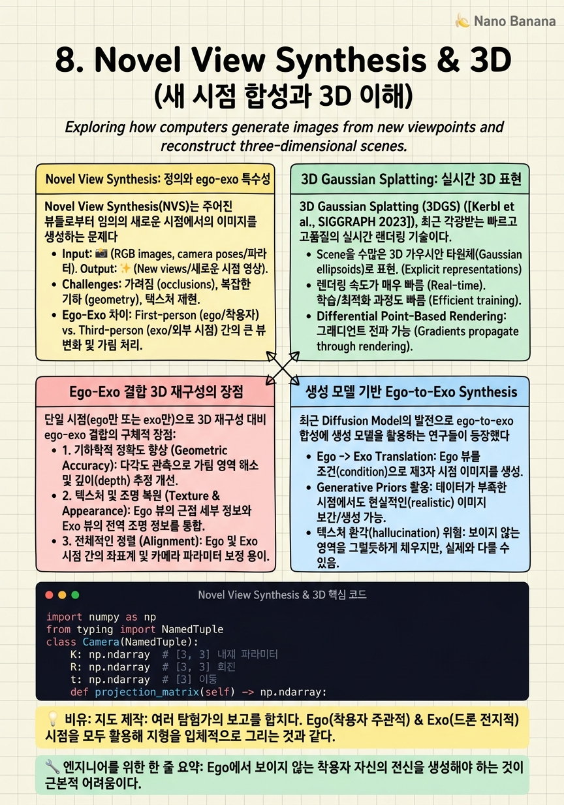

Novel View Synthesis & 3D

🎯 학습 목표
- Novel view synthesis를 ego-exo 맥락에서 정의하고 그 어려움을 설명할 수 있다
- 3D Gaussian Splatting의 기본 원리와 ego-exo 3D 재구성에의 적용을 이해한다
- Ego와 exo 데이터를 결합한 3D 재구성이 단일 시점 재구성보다 유리한 이유를 설명할 수 있다
- Ego-to-Exo 생성에서의 현재 방법과 한계를 파악한다
컴퓨터 비전의 궁극적 목표 중 하나는 장면을 3D로 이해하는 것이다. Ego와 exo 두 시점의 비디오가 있으면, 이 두 관점을 결합해 더 완전한 3D 이해를 달성할 수 있다는 희망이 있다. 또한 Novel View Synthesis — 새로운 시점에서 장면이 어떻게 보일지 생성하는 것 — 은 VR/AR, 로보틱스, 영화 제작 등에서 폭넓은 응용이 있다.
Ego-exo 맥락에서 novel view synthesis는 특별한 의미를 가진다: ego 비디오에서 exo 뷰를 생성하거나 (ego-to-exo), exo 비디오에서 ego 뷰를 생성하는 것 (exo-to-ego). 이를 통해 데이터 증강, 임퇴직 훈련 시뮬레이션, 스포츠 전술 분석 등 다양한 응용이 가능하다.
2025-2026년에 3D Gaussian Splatting 기반 방법들이 주목받고 있으며, 여러 ego-exo 비디오를 입력받아 실시간 렌더링이 가능한 3D 장면 표현을 학습하는 연구들이 등장했다.
핵심 내용
Novel View Synthesis: 정의와 ego-exo 특수성
Novel View Synthesis(NVS)는 주어진 뷰들로부터 임의의 새로운 시점에서의 이미지를 생성하는 문제다. 수식:
\[I_{\text{novel}} = f(I_1, I_2, ..., I_N, c_{\text{novel}})\]
여기서 \(I_i\)는 입력 뷰, \(c_{\text{novel}}\)은 새 카메라 파라미터.
Ego-exo 맥락에서 NVS는 두 가지 특수한 형태를 가진다:
Ego-to-Exo Synthesis: 착용 카메라(ego) 뷰만 있을 때, 외부 관찰자(exo) 시점의 이미지를 생성한다. 이는 착용자의 전신을 생성하는 것을 포함하기 때문에 특히 어렵다 — ego 비디오에는 착용자 자신이 보이지 않기 때문이다.
Exo-to-Ego Synthesis: 외부 카메라에서 촬영된 비디오로부터 착용자 시점의 이미지를 생성한다. 이는 VR 체험 생성, 1인칭 스포츠 영상 합성 등에 응용된다.
Ego-exo NVS의 핵심 어려움: 착용자의 몸 모델링. 착용자의 몸은 ego 카메라에서는 대부분 보이지 않지만, exo 합성 시 자신이 생성되어야 한다. 이를 위해 exo 데이터에서 학습한 신체 모델이나 diffusion model 기반 인페인팅이 필요하다.
3D Gaussian Splatting: 실시간 3D 표현
3D Gaussian Splatting (3DGS) (Kerbl et al., SIGGRAPH 2023)은 NeRF 이후 가장 중요한 3D 표현 방법이다. NeRF가 암묵적 함수(MLP)로 장면을 표현하는 것과 달리, 3DGS는 수백만 개의 3D Gaussian으로 장면을 명시적으로 표현한다.
각 Gaussian은 다음 속성을 가진다: 위치 \(\mu \in \mathbb{R}^3\), 공분산 \(\Sigma \in \mathbb{R}^{3 \times 3}\), 색상(구면 조화 함수), 불투명도 \(\alpha\).
렌더링: 새 시점에서 Gaussian들을 이미지 평면에 투영하고 \(\alpha\)-블렌딩으로 합성한다. NeRF보다 10~100배 빠른 실시간 렌더링이 가능하다.
Ego-exo 응용: EgoSplat (arXiv:2406.19811)과 같은 연구에서 ego와 exo 프레임을 함께 사용해 더 완전한 3DGS를 학습한다. Ego 카메라는 클로즈업 영역(손, 도구)의 고해상도 Gaussian을 제공하고, exo 카메라는 넓은 영역의 기하학적 구조를 제공한다. 두 시점의 상호보완성이 3D 재구성 품질 향상에 직접 기여한다.
Ego-Exo 결합 3D 재구성의 장점
단일 시점(ego만 또는 exo만)으로 3D 재구성 대비 ego-exo 결합의 구체적 장점:
1. 가려짐 보완: Ego에서 가려진 영역을 exo가 보완하고, 그 반대도 성립한다. 예: 도구를 집는 손은 ego에서 전면에 있어 배경 물체를 가리지만, exo에서는 그 배경 물체가 보인다.
2. 뷰 다양성 증가: 두 개 이상의 서로 다른 시점에서 촬영된 데이터를 이용하면 3D 재구성의 기하적 제약이 강해진다. 삼각측량(triangulation)의 정확도가 뷰 수와 분산에 비례해 향상된다.
3. 스케일 앰비규이티 해소: 단일 카메라 ego 비디오에서는 스케일이 불명확하다 ('이 물체가 멀리 있는 큰 것인가, 가까이 있는 작은 것인가?'). Exo와 함께 삼각측량하면 절대 스케일을 복원할 수 있다.
4. 동적 객체 추적: 행위자의 손이나 도구가 움직일 때, 단일 시점에서는 모션 방향 추정이 불명확할 수 있다. 두 시점 삼각측량으로 3D 궤적을 정확히 복원할 수 있다.
수식으로: 두 카메라 \(C_1, C_2\)의 내재 파라미터 \(K_1, K_2\)와 상대 자세 \([R|t]\)가 알려져 있을 때, 3D 점 \(X\)는:
\[X = \text{DLT}(P_1 x_1, P_2 x_2)\]
\(P_i = K_i [R_i | t_i]\)는 투영 행렬, \(x_i\)는 이미지 좌표, DLT는 직접 선형 변환(Direct Linear Transform).
생성 모델 기반 Ego-to-Exo Synthesis
최근 Diffusion Model의 발전으로 ego-to-exo 합성에 생성 모델을 활용하는 연구들이 등장했다. 핵심 아이디어: ego 비디오를 조건으로 exo 비디오를 생성하는 조건부 비디오 생성 모델.
주요 논문 (arXiv:2506.17896, arXiv:2511.20186):
방법론의 핵심 도전:
- 신체 생성: Ego에서 보이지 않는 착용자의 전신을 hallucinate해야 한다. 이를 위해 별도의 신체 모델(SMPL 등)이나 in-context 신체 예측이 필요하다
- 일관성 유지: 생성된 exo 비디오가 ego와 시간적으로 일관되어야 한다 — 같은 행동을 해야 한다
- 카메라 파라미터 제어: 어떤 각도에서 exo를 생성할지를 제어할 수 있어야 한다
생성 기반 접근의 한계:
- Ego와 exo의 신체 일관성 보장이 어려움
- 생성된 영상의 물리적 정확성 부족 (관절 각도, 물체 물리 등)
- 고해상도 실시간 생성이 아직 어려움
이 한계들이 새로운 논문의 기회이기도 하다.
💡 비유로 이해하기
Ego-exo 3D 재구성은 여러 탐험가의 탐험 보고를 합쳐 지도를 만드는 것과 같다. 한 탐험가(ego)는 협곡 안에서 탐험해 세밀한 지형(손이 닿는 바위의 질감, 좁은 통로의 구조)을 보고한다. 다른 탐험가(exo)는 협곡 밖에서 전체 윤곽을 관찰해 큰 그림(협곡의 전체 길이, 입구 위치, 높이)을 보고한다.
두 보고를 합치면 가장 완전한 지도가 만들어진다. 안(ego)에서만 본 지도는 세부 지형은 정확하지만 전체 맥락을 놓친다. 밖(exo)에서만 본 지도는 큰 그림은 맞지만 내부 세부가 부족하다. 3D Gaussian Splatting이 이 '지도 합성'의 현대적 방법이다.
💻 코드 예시
ego와 exo 두 시점에서 3D 점을 삼각측량하는 기본 코드다. Ego-Exo4D의 캘리브레이션 데이터가 있을 때 이 방법으로 손 키포인트의 3D 위치를 복원할 수 있다.
import numpy as np
from typing import NamedTuple
class Camera(NamedTuple):
K: np.ndarray # [3, 3] 내재 파라미터
R: np.ndarray # [3, 3] 회전
t: np.ndarray # [3] 이동
def projection_matrix(self) -> np.ndarray:
"""[3, 4] 투영 행렬 P = K [R | t] 반환."""
Rt = np.hstack([self.R, self.t.reshape(3, 1)])
return self.K @ Rt
def triangulate_dlt(
cam1: Camera, pt1: np.ndarray, # [2] 이미지 좌표
cam2: Camera, pt2: np.ndarray, # [2] 이미지 좌표
) -> np.ndarray:
"""DLT로 두 카메라에서 3D 점 복원."""
P1 = cam1.projection_matrix() # [3, 4]
P2 = cam2.projection_matrix()
# 선형 시스템: A @ X = 0
A = np.array([
pt1[0] * P1[2] - P1[0],
pt1[1] * P1[2] - P1[1],
pt2[0] * P2[2] - P2[0],
pt2[1] * P2[2] - P2[1],
])
# SVD로 최소 노름 해 구하기
_, _, Vt = np.linalg.svd(A)
X_hom = Vt[-1] # 동차 좌표 [4]
X = X_hom[:3] / X_hom[3] # 비동차 [3]
return X
# 예시: ego 카메라 (Aria)와 exo 카메라 (GoPro) 설정
# 실제 사용 시 Ego-Exo4D의 calibration JSON에서 파라미터를 로드한다
cam_ego = Camera(
K=np.array([[800, 0, 540], [0, 800, 960], [0, 0, 1]], dtype=float),
R=np.eye(3),
t=np.zeros(3),
)
cam_exo = Camera(
K=np.array([[600, 0, 960], [0, 600, 540], [0, 0, 1]], dtype=float),
R=np.array([[0.99, -0.1, 0.0], [0.1, 0.99, 0.0], [0.0, 0.0, 1.0]]),
t=np.array([2.0, 0.5, 3.0]),
)
# 손 키포인트 이미지 좌표 (예시)
pt_ego = np.array([540.0, 800.0]) # ego에서 관찰된 손 위치
pt_exo = np.array([420.0, 350.0]) # exo에서 관찰된 같은 손 위치
X_3d = triangulate_dlt(cam_ego, pt_ego, cam_exo, pt_exo)
print(f"3D hand position: {X_3d}")
DLT의 핵심은 각 대응 점이 x_i * P_i[2] - P_i[row] 형태의 선형 제약을 만든다는 것이다. 4개 제약(2 카메라 × 2 좌표)을 쌓은 행렬 A의 SVD 최소 특이값 벡터가 3D 점의 동차 좌표가 된다. 실제 ego-exo 연구에서는 여러 exo 카메라를 사용해 더 많은 제약으로 더 정확한 복원이 가능하다.
🏭 현업에서의 평가
✅ 시니어가 보는 것
- 삼각측량(DLT)의 수식을 쓰고 SVD로 해를 구하는 과정 설명
- 3DGS와 NeRF의 차이, 특히 렌더링 속도와 표현 방식의 차이
- Ego-to-Exo synthesis에서 착용자 신체 생성이 왜 특히 어려운지
- 여러 exo 카메라를 사용할 때 3D 재구성 품질이 어떻게 향상되는지
⚠️ 레드 플래그
- 삼각측량을 '두 카메라로 거리를 재는 것'으로만 설명하는 경우
- 3DGS를 NeRF와 같은 것으로 취급하는 경우
- ego에서 착용자 전신이 보이지 않는다는 기본 사실을 놓치는 경우
🎤 예상 인터뷰 질문
- Ego-Exo4D의 캘리브레이션 데이터를 이용해 손 키포인트의 3D 궤적을 복원하는 파이프라인을 설계하라.
- 3DGS로 ego-exo 장면을 재구성할 때 ego와 exo 카메라의 exposure 차이(밝기, 노출)를 어떻게 처리해야 하는가?
- ego-to-exo synthesis에서 생성된 영상의 물리적 일관성을 평가하는 메트릭은 무엇을 사용해야 하는가?
✨ 핵심 요약
Ego-to-Exo Synthesis의 핵심 어려움
Ego에서 보이지 않는 착용자 자신의 전신을 생성해야 하는 것이 근본적 어려움이다.
3DGS가 현재 SOTA
수백만 3D Gaussian으로 장면을 표현하며 실시간 렌더링이 가능 — NeRF 대비 10-100배 빠르다.
두 시점이 3D 재구성을 완성한다
Ego는 클로즈업 세부, exo는 전체 구조 — 두 시점의 상호보완성이 3D 재구성 품질에 직접 기여한다.
삼각측량으로 절대 스케일 복원
Ego만으로는 불명확한 스케일을 exo 카메라와의 삼각측량으로 복원할 수 있다.
생성 모델 기반 접근 등장
Diffusion 모델로 ego 조건부 exo 비디오 생성이 가능해졌지만, 물리적 일관성 보장이 여전히 과제.
동적 장면이 미해결 과제
움직이는 손과 도구를 포함한 ego-exo 동적 장면의 3D 재구성과 synthesis가 열린 연구 문제다.